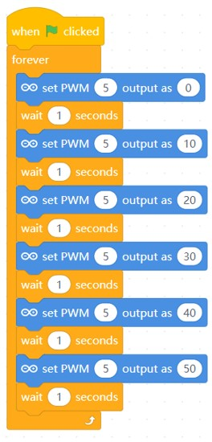
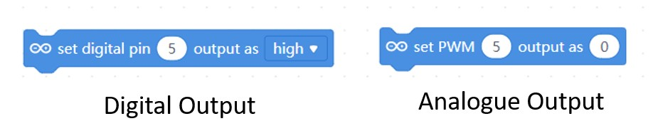
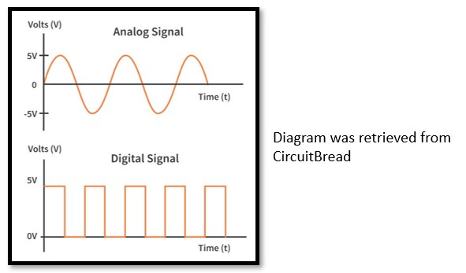
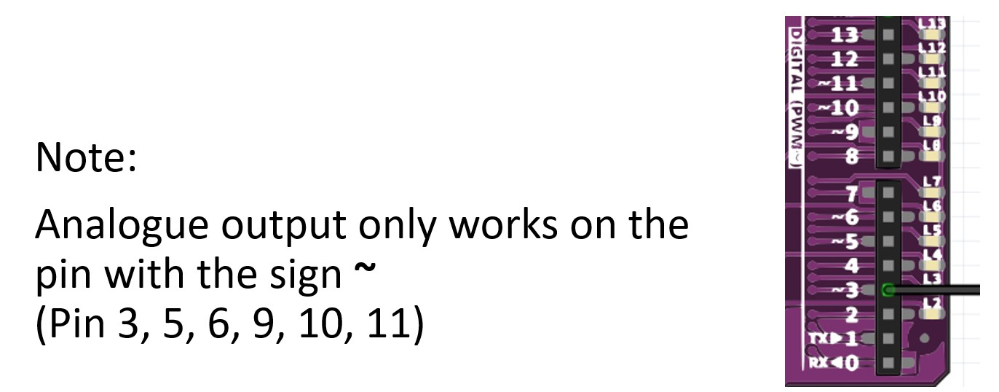

Project 4: Fade An LED
Objective: To program an analogue output by fading the LED light.
Before we begin, switch to Live mode

-
You will need the following components:

-
Then construct the following circuit:

-
Write the following code.

-
Press the Green flag
 button and observe the results.
button and observe the results.
The LED should gradually brighten every second, as the code functions by incrementally increasing the intensity of the LED light.
Difference between analogue and digital output

- Digital Output has two outcomes, HIGH or LOW.
- Example: Think of turning a light switch on or off,
- Analogue Output is continuous with values ranging from 0 to 255
- Example: adjusting a volume knob smoothly instead of just turning it on or off.
The diagram below shows how analogue and digital signal works. 

Challenge
Modify the code so that, the LED brightness will fade dimmer instead.
Could you try to make the LED fade more smoothly?
Once completed, inform your teacher to check your progress.